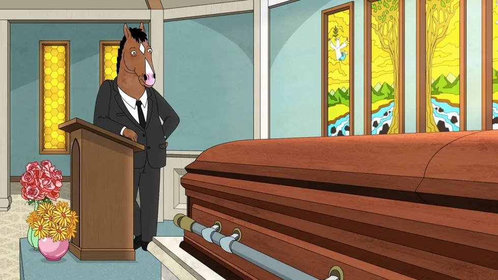

2. Un churro gratis .
Temporada 5, episodio 6. Puntuación en IMDB 9,8
Otro episodio clave en la serie, Un churro gratis, es un capítulo sencillo pero a la vez muy ambicioso, en el que Bojack pronuncia el panegírico de su madre frente a su ataúd, recordando momentos clave de su vida con ella como su infancia, anécdotas ocurridas en televisión y un día en el que un dependiente le dio a Bojack un churro gratis. Pronunciar este discurso es tremendamente duro para Bojack, ya que su madre nunca lo ha tratado bien y su muerte le produce una catarata de sentimientos contradictorios. Recibido por la crítica con un entusiasmo unánime, parecía destinado a garantizarle el Emmy al actor que prestaba la voz a Bojack, Will Arnett, pero no fue así. La serie nunca recibió ninguno de estos premios.
Parecíamos entendernos. Mi mama, mi papa y yo, tan jodidos como estábamos, nos entendíamos. Mi madre sabía lo que era sentir todo el tiempo que te estas ahogando, excepto por estos momentos. Estas instancias muy raras y breves en las que de repente recuerdas que sabes nadar. Pero eso no sucede casi nunca, casi siempre te estas ahogando. Ella entendía eso, y reconoció que lo entendí. Y papa también. Los tres nos ahogábamos y no sabíamos cómo salvarnos, pero sabíamos que nos estábamos ahogando juntos…